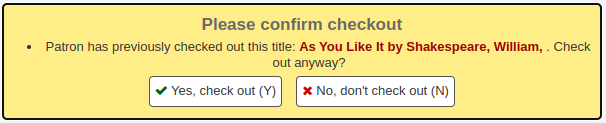
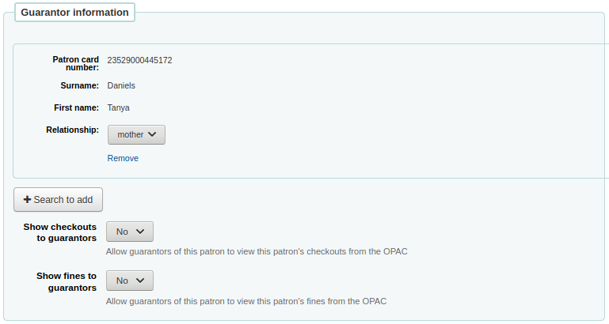
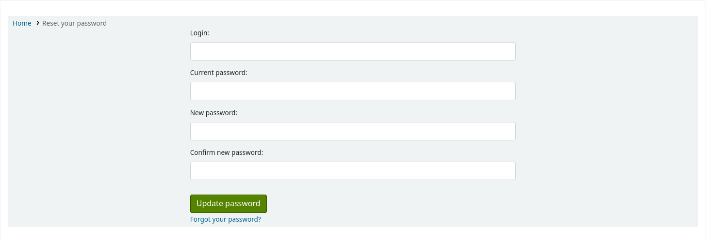

讀者
一般
AllowPatronToControlAutoRenewal
詢問: ___ 允許/不允許帳戶自動續借。如果允許，讀者能夠更新他們的帳戶去允許/不允許自動續借。
預設值：僅允許館員
值:
僅允許館員
允許讀者
說明：
CheckPrevCheckout
詢問：___ 檢查借閱者的借出紀錄查看此館藏是否被借過。
預設值：不要
值:
做
不要
除非被讀者類別覆蓋，否則
除非被讀者類別覆蓋，否則不要
說明：
此系統偏好設為 ‘做’，Koha 將查看讀者的流通紀錄檢視該館藏是否被借過。若被借出則出現警示。館員仍可借出此館藏。

若此值設定為 ‘不做’，Koha 將不會檢視讀者的流通紀錄。
最後，若此值被設定為 ‘除非被讀者類別覆蓋，否則不要’，Koha 將不會檢查讀者的流通紀錄除非讀者的 個人設定 或 讀者類別設定 指明可以檢查。
备注
即使讀者選擇其設定匿名借出記錄，經由此偏好仍可儲存讀者最後一筆借出資訊。
备注
The circulation history will be checked at record-level for most items, except if the item is on a serial record.
This means that if a patron has checked out a copy of a book, the warning will show if they try to check out any item of the same record.
However, if the record has ‘s’ in its leader, position 7, marking this record as a serial, the warning will only show if they try to check out the exact same item.
CheckPrevCheckoutDelay
詢問：如果目前館藏借出時間不超過 ___ 天前，則觸發警告。
預設值：0
說明：
This system preference limits the behavior of CheckPrevCheckout to a number of days. If an item has been borrowed by a patron longer than the number of days, there will be no warning, as if the patron had never borrowed it.
Requires CheckPrevCheckout to be enabled.
如果設定為 0 或為空，則沒有時間限制。
DefaultPatronSearchFields
詢問：___ 逗點區隔選單內的欄位
預設值：surname,firstname,othernames,cardnumber,userid
重要 可以從位在 http://schema.koha-community.org/ 的 Koha 綱要找到讀者表的可能值
說明：
這個系統偏好使你能夠定義當你進行基本讀者搜尋時，哪些欄位會被搜尋到。
這些欄位也會出現在讀者搜尋的下拉式選單中，因此你可以只搜尋特定欄位。
EnableBorrowerFiles
詢問：___ 啟用上傳與附加檔案在讀者記錄裡的功能。
預設值：不要
值:
做
不要
說明：
啟用此功能時將在讀者詳情頁面左方出現 ‘檔案’ 分頁，可檢視與上傳檔案至讀者紀錄。
ExtendedPatronAttributes
詢問：___ 搜尋、編輯與顯示讀者的客製化屬性。
預設值：啟用
值:
停用
啟用
於 Koha 管理設定屬性
到那裡：更多 > 管理 > 讀者屬性類型
說明：
讀者屬性為圖書館定義的客製化欄位供讀者記錄使用。
說明
以自定義欄位收納原來未包括的讀者記錄，如：身份證字號或學生證號碼等。
FeeOnChangePatronCategory
詢問：___ 收取費用當讀者變更其類型為需收費。
預設值：要
值:
做
不要
說明
您可以在 :ref:`讀者類型 <adding-a-patron-category-label>`中設定註冊費
intranetreadinghistory
詢問：___ 館員近用讀者借出與預約記錄。
預設值：允許
重要的
If you have the OPACPrivacy preference set to ‘Allow’ and the patron has decided to not have their history kept, staff will only see currently checked out items.
值:
允許
不允許
重要的
除非讀者經由 隱私頁面，匿名其借閱記錄，否則館員仍可近用其閱讀記錄。
ListOwnershipUponPatronDeletion
Asks: When deleting a patron who owns public or shared lists, ___ .
Default: delete these lists
值:
delete these lists
change owner of these lists
說明：
This system preference lets you decide what happens to public or shared lists when their owner (creator) is deleted.
For example, this is used to salvage public lists when a staff member is deleted.
If ‘change owner of these lists’ is chosen, make sure to enter the new owner’s borrowernumber in the ListOwnerDesignated system preference.
This system preference does not affect private lists. Private lists will be deleted with the patron.
ListOwnerDesignated
Asks: When changing owner at patron deletion, use borrowernumber ___ as new list owner, or leave this field empty in order to change owner to the active staff member who deletes the patron.
Default: (empty)
說明：
This system preference is used when ListOwnershipUponPatronDeletion is set to ‘change owner of these lists’.
The borrowernumber in this system preference will be the recipient of the public and shared lists of deleted patrons.
If left empty, the user who deletes the patron will be the recipient of the patron’s public and shared lists
LockExpiredDelay
要求：在 ___ 天後鎖定過期的讀者。 留空以禁用此行為。
預設值：空白
說明：
該系統偏好決定過期的讀者在多少天後被’管理鎖定’。
管理鎖定可防止讀者登錄 OPAC。
备注
這個系統偏好需要 misc/cronjobs/cleanup_database.pl 工作排程（除了–confirm以外沒有必要的參數）
MaxFine
詢問：罰款總額的上限是 ___[貨幣] 。
預設值：空白（空值表示沒有限制）
說明：
此偏好控制每位讀者罰款的上限。若空白則無上限。可把個別館藏的罰款上限規定在 :ref:`流通規則矩陣 <circulation-and-fine-rules-label>`內。
patronimages
詢問：___ 於館員介面上傳並顯示讀者照片。
預設值：允許
值:
允許
不允許
說明：
If this preference is set to ‘Allow’ the staff will be able to upload images of patrons either one by one or in bulk. Patrons images will show on the detail page to the left of the patron information. They can also show in the OPAC if you set the OPACpatronimages preference or in the self check out module if you set the ShowPatronImageInWebBasedSelfCheck preference.
PatronsPerPage
詢問：預設，在館員介面每頁顯示 ___ 筆結果。
預設值：20
說明：
此偏好允許您人設定在搜尋讀者後每個頁面顯示的讀者數。
ProtectSuperLibrarianPrivileges
- 詢問：___ 近用/改變超級圖書館員的權限。說明：有權限的使用者
需要擁有 ‘授權’ 標示 (若不是超級圖書館員)
預設值：只限超級圖書館員
值:
允許所有被授權的使用者
只允許超級圖書館員
StatisticsFields
詢問：在讀者記錄的統計分頁裡顯示館藏資料庫的以下欄位：___
預設值：location|itype|ccode

重要的
以直線 (|) 分隔其值
說明：
此偏好允許您設定哪些欄位將顯示在 統計標籤 上的讀者記錄中。
TrackLastPatronActivity
注意
This system preference was replaced by TrackLastPatronActivityTriggers from version 23.11.
詢問：___ 追蹤讀者最後的活動。讀者登入後，更新 borrowers.lastseen 的時間。
預設值：不要
值:
不要
做
TrackLastPatronActivityTriggers
Version note
This system preference was added from version 23.11. It replaces TrackLastPatronActivity.
Asks: Select which patron activities should be tracked to signify patron activity. The first time each day that one of these activities occurs, borrowers.lastseen will update with the current date and time. ___
Default: none
值:
[Select all]
Checking out an item
Connection to Koha via SIP or ILSDI
Login
Places an article request
Placing a hold on an item
Renewing an item
Returning an item
說明：
This system preference allows libraries to decide which action triggers an update of the patron’s “Date last seen”.
Checking out an item: date last seen is updated when staff checks out an item to the patron.
Connection to Koha via SIP or ILSDI: date last seen is updated when the patron logs into a third-party service using SIP or ILSDI (online resources, for example).
Login: date last seen is updated when the patron logs into the OPAC or when a staff member logs into the staff interface.
Places an article request: date last seen is updated when the patron places an article request in the OPAC, or when a staff member places an article request in the staff interface on behalf of the patron.
Renewing an item: date last seen is updated either when staff renews a checked out item for the patron, or the patron renews their checkout through their OPAC account.
Returning an item: date last seen is updated when staff checks in an item for the patron.
If no activities are selected, patron activity is not tracked and the borrowers.lastseen field is not updated.
useDischarge
詢問：___ 圖書館員主動退出讀者或同意讀者的退出要求。
預設：不允許
值:
允許
不允許
說明：
Enabling this system preference will add the possibility of emitting a discharge from the patron record and requesting a discharge from the OPAC.
A discharge is a certificate that says the patron has no current checkouts and no holds.
會員到期
BorrowerRenewalPeriodBase
詢問：更新讀者證時，以 ___ 為基礎
預設值：今天
值:
今天。
原到期日。
說明：
當您 更新讀者證 時，此偏好控制讀者新的到期日期。設定為 ‘今天’ 將以今天為基礎計算新的到期日。設定 ‘原到期日’ 將以原到期為基礎計算新的到期日。
MembershipExpiryDaysNotice
詢問：讀者證到期 ___ 天前，送出到期通知。
說明：
If you would like to notify patrons that their accounts are about to expire then you can enter a number of days before expiration in this preference. The notice text can be customized in the Notices and slips tool, the letter code is MEMBERSHIP_EXPIRY.
重要
可以啟用 會員到期排程工作 送出此通知。
NotifyBorrowerDeparture
詢問：___ 天前通知讀者其讀者證即將到期。
預設值：30
說明：
讀者在此期限內借出館藏時，在館員介面的借出視窗出現警示訊息告知圖書館員該讀者帳號即即將到期。
重要的
此通知顯示在館員介面的讀者記錄。
通知和通報
AutoEmailNewUser
Asks: ___ an email to newly created patrons.
預設值：不寄送
值:
不寄送
寄送
說明：
This system preference determines if library users are sent a welcome email
The notice used is the WELCOME, it can be edited in the notices and slips
The welcome notice is sent to the email address specified in the EmailFieldPrimary system preference.
AutoRenewalNotices
詢問：發送自動續借通知：___
預設值：（已棄用）根據 –寄送-通知工作排程開關
值:
（已棄用）根據 –發送-通知工作排程開關
不曾
根據讀者訊息偏好
說明：
This system preference determines whether automatic renewal notices are sent to patrons to inform them their checkouts have been renewed.
备注
The notice sent is based on the AUTO_RENEWALS or AUTO_RENEWALS_DGST templates. The content of these notifications can be customized in the Notices and slips tool.
EmailFieldPrecedence
Asks: When EmailFieldPrimary is set to ‘first valid’, check the patron email address fields in the following order and use the first valid email address found: ___
Default: email|emailpro|B_email
Values: any database field from the borrowers table, separated by pipes (|).
說明：
This system preference is used to force the order in which email addresses are checked when the EmailFieldPrimary system preference is set to ‘first valid’.
Any field from the borrowers table in the database can be used, as long as it contains an email address or is empty. Find the database columns in the database schema: https://schema.koha-community.org/
EmailFieldPrimary
Asks: Use the patron’s ___ for sending out email notices.
Default: first valid email address
值:
alternate email
cardnumber
primary email
secondary email
first valid email address
說明：
If you choose ‘first valid’ as the value for this system preference, the system will check the email fields in the order specified in the EmailFieldPrecedence system preference. Otherwise, the system will use the email address you specify.
This is used for all email notices, including welcome messages), overdue notices, and advance notices, among others.
EnhancedMessagingPreferences
詢問：___ 讀者選擇是否與何時收取通知。
預設值：允許
值:
允許
不允許
重要的
只偏好適用部份通知，逾期通知依照 圖書館的規定，讀者沒有選擇權。
說明
To manage if patrons have also access to these settings, use EnhancedMessagingPreferencesOPAC.
說明：
指的是逾期通知以外的通知。讀者可以選擇收取或不收取逾期通知以外的通知。設定為 ‘允許’ 後，讀者可以選擇收取或不收以下的通知：
借出館藏：每次借出或續借就通知，算是電子借出收條
到期通知：館藏到期當天的通知
預約可取：讀者預約書籍已在館可取
還入館藏：讀者剛還入的館藏清單
提早通知：用於通知讀者其借出的館藏即將到期 (館員可指定提前的天數)
EnhancedMessagingPreferencesOPAC
詢問：___ 讀者經由 OPAC 設定
預設值：顯示
值:
不顯示
顯示
重要的
EnhancedMessagingPreferences must be enabled for messaging options to show in the OPAC
說明：
指的是逾期通知以外的通知。讀者可以選擇收取或不收取逾期通知以外的通知。設定為 ‘允許’ 後讀者可以選擇收取或不收以下的通知：
借出館藏：每次借出或續借就通知，算是電子借出收條
到期通知：館藏到期當天的通知
預約可取：讀者預約書籍已在館可取
還入館藏：讀者剛還入的館藏清單
提早通知：用於通知讀者其借出的館藏即將到期 (讀者可指定提前的天數)
FallbackToSMSIfNoEmail
詢問：___ 如果未定義讀者電子郵件，則通過 SMS 寄送購買建議消息。
預設值：停用
值:
停用
啟用
說明：
這個系統偏好只適用於與建議有關的通知。如果讀者沒有電子郵件地址，但有一個短信提醒號碼，建議通知將被發送到他們的短信號碼。
NotifyPasswordChange
Asks: ___ patrons whenever their password is changed.
Default: Don’t notify
值:
Don’t notify
Notify
說明：
This system preference is used to send a notification to a patron whose password has been changed, either changing the password in the patron’s account in the staff interface, resetting the password from the OPAC, or changing the password through the OPAC.
The notification sent is based on the PASSWORD_CHANGE template. It can be customized in the Notices and slips tool.
SMSSendDriver
詢問：以 SMS::Send:: ___ 驅動程式送出 SMS 訊息。
备注
可能無法與全部供應商使用。
重要
啟用此功能前請先確認整批傳送簡訊的法律規定。
說明：
Koha 使用 SMS 時，有兩個選項。輸入 ‘Email’ 做為 SMSSendDriver 使用 Email 通信協定，或付費使用 SMS 驅動程式。範例如下：
SMS::Send::Us::Ipipi
SMS::Send::US::TMobile
SMS::Send::US::Verizon
SMS::Send::IN::Unicel
其他的值可從這裡找到：http://search.cpan.org/search?query=sms%3A%3Asend&mode=all
备注
Many mobile providers have deprecated support for the SMS::Send::Email feature. It is not recommended for use unless you have a dedicated SMS to Email gateway.
重要
- Only drivers available as Perl modules will work in this
preference, so make sure a Perl module is available before choosing an SMS service.
在此偏好設定驅動程式後將在館員介面與 OPAC 出現讀者訊息表單供選擇接收簡訊

重要的
You must allow EnhancedMessagingPreferences for this to work.
SMSSendUsername, SMSSendPassword, and EmailSMSSendDriverFromAddress
Asks: Define a username/login ___ and a password ___. Override from address with ___ for emails sent using “Email” send driver.
說明：
Some SMS gateway providers require username and password credentials and these can be entered here. Additionally, one specific email address may be required as sender (from address) for all emails sent by the Email SMS send driver.
TalkingTechItivaPhoneNotification
詢問：___ 以 Talking Tech i-tiva 電話通知讀者 (目前支援逾期通知、提前通知與預約通知)。
預設值：停用
值:
停用
啟用
說明：
有關第三方產品的安裝詳情見 Talking Tech。
重要的
Requires that you have EnhancedMessagingPreferences set to Allow to use.
UseEmailReceipts
詢問：___ 把收條以電子郵件寄給讀者，要求付款或申請豁免。
預設值：不寄送
值:
不寄送
寄送
說明：
若設定為 ‘寄送’，Koha 將把每筆付款或註銷以電子郵件寄給讀者。
說明
此等信件使用於 ACCOUNT_PAYMENT 與 ACCOUNT_WRITEOFF
您可以在 說明與收條 工具中編輯它。
讀者表格
autoMemberNum
詢問：___ 自動給定下個可用的讀者號
預設值：要
值:
做
現在最大讀者號為 26345000012941，則下個讀者號為 26345000012942
不要
說明：
此偏好自動給定下個讀者證的條碼。主要功能為避免重號。若設為 ‘要’ 系統就最大的讀者證號再加 1 做為新的讀者證號。
BorrowerMandatoryField
詢問：讀者必須在進入畫面填寫以下資料庫欄位 ：___
Default: surname|cardnumber
說明：
This system preference enables the system administrator to choose which fields staff is required to fill in when creating or editing patron accounts.
This ensures that basic information is included in each patron record. If a staff member leaves one of the required fields blank, an error message will appear and the account will not be created or saved.
备注
For help with field names, ask your system administrator or view the database structure associated with the borrowers table.
备注
If either PatronQuickAddFields or BorrowerMandatoryField (or both) is set, a button labeled “Quick add new patron” will be displayed in the patrons toolbar.
BorrowersTitles
詢問：讀者的敬稱為 ___
預設值：Mr|Mrs|Miss|Ms
說明：
此偏好讓館員選擇讀者的敬稱。新增讀者紀錄時產生下拉選單。
重要的
以直線 | 分隔多種保證人
BorrowerUnwantedField
詢問：以下的資料庫欄將不顯示在讀者進入畫面：___
說明：
This system preference enables the system administrator to choose which fields staff doesn’t need to see on the patron entry form.
备注
For help with field names, ask your system administrator or view the database structure associated with the borrowers table.
CardnumberLength
詢問：讀者證號碼的長度必須是 ___ 字元。
說明：
The length can be a single number to specify an exact length, a range separated by a comma (i.e., ‘Min,Max’), or a maximum with no minimum (i.e., ^,Max’). If ‘cardnumber’ is included in the BorrowerMandatoryField list, the minimum length, if not specified here, defaults to one.
CollapseFieldsPatronAddForm
詢問: 新增讀者或編輯現有讀者時，請從完整表單中隱藏以下欄位 (仍可展開)：
值:
其他屬性與辨識碼
備用地址
備用聯絡
聯絡資訊
擔保人資訊
Housebound 角色
圖書館管理
圖書館設定
主要地址
OPAC/館員介面
組織/讀者身份
讀者帳戶標誌（現有讀者）
讀者訊息偏好
讀者限制（現有讀者）
說明：
這個系統偏好允許你暫時隱藏讀者新增表格和讀者編輯表格中的部分。這些部分將被折疊，如果需要，館員將能夠展開它們。
If you would rather completely hide sections, without the possibility of expanding them, enter the field names in BorrowerUnwantedField.
PatronDuplicateMatchingAddFields
詢問：以下資料庫列：___ 將用於在新增新讀者時檢測可能的重複項。
預設值：surname|firstname|dateofbirth
說明：
此系統偏好允許您選擇將使用哪些欄位來偵測重複讀者。
PatronQuickAddFields
Asks: The following database columns ___ will be added to the patron quick add form when entering a new patron. Displays only mandatory fields and fields specified here. If applicable, the guarantor form will be shown as well, individual fields in that form will be ignored.
預設值：空白
說明：
This system preference can be used to add fields to the “Quick add new patron” form.
The “Quick add new patron” form only shows fields specified in this system preference and in BorrowerMandatoryField
备注
For help with field names, ask your system administrator or view the database structure associated with the borrowers table.
备注
If either PatronQuickAddFields or BorrowerMandatoryField (or both) is set, a button labeled “Quick add new patron” will be displayed in the patrons toolbar.
uppercasesurnames
詢問：___ 以大寫字母儲存及顯示姓。
預設值：不要
值:
做
不要
讀者關係
AllowStaffToSetCheckoutsVisibilityForGuarantor
詢問：在 OPAC 的詳情頁面 ___ 借出館藏讀者的姓名。
預設：不允許
值:
不允許
允許
說明：
此系統偏好控制館員是否可以看到向 OPAC 中關聯的讀者顯示結帳的選項。

AllowStaffToSetFinesVisibilityForGuarantor
詢問：在___ 館員設置的 OPAC 連結中，讀者可以查看罰款能力。
預設：不允許
值:
不允許
允許
說明：
此系統偏好控制館員是否可以看到向 OPAC 中關聯的讀者顯示罰款的選項。
borrowerRelationship
詢問：擔保人可以是他們擔保的以下那些___
預設值：父親|母親
說明：
此偏好讓系統管理者設定擔保人 (通常是父母) 與被擔保人(通常是孩子) 的關係。設定此欄位的值並不會成為新增被擔保人讀者類型的必備欄位。此偏好新增下拉選單，辨識擔保人與被擔保人的關係。空白則停用兒童類型讀者。
重要的
以直線 | 分隔多種保證人
PrefillGuaranteeField
詢問: 向擔保人讀者新增擔保時，請根據擔保人的記錄填寫擔保成員輸入表中的以下欄位：___
預設：
聯繫人 - 主要電子郵件
聯繫人 - 主要電話
主要地址 - 地址
主要地址 - 城市
主要地址 - 國家
主要地址 - 國家
主要地址 - 壓縮/郵政編碼
主要地址 - 門牌號
說明：
在使用 ‘新增擔保’ 按鈕時，該系統偏好用於將訊息從擔保人帳戶複製到擔保帳戶。
隱私
PrivacyPolicyConsent
Asks: Set data privacy policy consent to ___
預設值：停用
值:
停用
執行
寬容的
說明：
This system preference makes a privacy policy consent form appear on the OPAC when a patron attempts to login. This can be used for GDPR or any other legal requirement concerning obtaining user consent for data collection.
If this system preference is set to ‘Enforced’, when a patron attempts to log into the OPAC a privacy policy consent form will be presented to them. The patron will have to provide consent to the library’s privacy policy before they can gain access to their account details. If the patron does not consent to the privacy policy they will be logged out of their account.
If this system preference is set to ‘Permissive’, the patron will see the privacy policy consent form, but they will not be required to give consent to access their patron account.
If this system preference is set to ‘Disabled’, no privacy policy consent form will appear when a patron logs into the OPAC.
When set to ‘Enforced’ or ‘Permissive’, PrivacyPolicyURL should contain a URL to the privacy policy.
PrivacyPolicyURL
要求：在有關隱私和數據保護的訊息中，使用以下 URL ___來參考你的本地隱私政策。
預設值：空白
說明：
This system preference is used when PrivacyPolicyConsent is set to either ‘Enforced’ or ‘Permissive’. It will add a link to your privacy policy to which the patrons must consent.
警告
If you enforce privacy policy, make sure that this page is not blocked.
UnsubscribeReflectionDelay, PatronAnonymizeDelay 和PatronRemovalDelay
要求：在 ___ 天後鎖定/終止提交取消訂閱請求（拒絕同意）的讀者，在 ___ 天後匿名鎖定/過期帳號並在 ___ 天後刪除匿名讀者帳號。
說明：
This system preference is used to purge accounts of patrons who have opted out/refused consent in the privacy policy consent form (see the PrivacyPolicy system preference).
第一個方框是選擇退出的讀者帳號應被鎖定的天數（相當於輸入錯誤密碼太多次）
第二個方框是鎖定帳號應匿名的天數
第三個方框是刪除匿名帳號後的天數
安全
EnableExpiredPasswordReset
Asks: ___ the ability for patrons to directly reset their password when it is expired.
預設值：不啟用
值:
停用
啟用
說明：
當使用密碼過期功能時，讀者必須在密碼過期後重新設定密碼。預設情況下，這是透過電子郵件完成的，與 “忘記密碼？”功能類似。
此系統偏好允許讀者直接重新設定密碼。

FailedLoginAttempts
詢問：如果達到 ___ 登入嘗試失敗，則阻止讀者的帳戶。
預設值：空白
說明：
這是在讀者輸入錯誤的密碼太多次後，用來封鎖他們的帳號
minPasswordLength
詢問： 館員與讀者的密碼長度至少為 ___ 字元長。
預設值：8
警告
同時影響館員登入與讀者從 OPAC 的登入。
备注
密碼長度也可以透過 :ref:`讀者類別<patron-categories-label>`設定。
Pseudonymization, PseudonymizationPatronFields and PseudonymizationTransactionFields
Asks: ___ pseudonymization to comply with data privacy policies and regulations like GDPR for managing personal information. Patrons and transactions will be copied to a separate table for statistics purpose. Use the following fields for patrons: ___ And the following fields for the transactions: ___
Pseudonymization values:
停用
啟用
Pseudonymization default: Disable
PseudonymizationPatronFields values:
[Select all]
City
Country
Date the patron was added to Koha
Patron’s category
Patron’s gender
Patron’s library
Patron’s title
Sort1
Sort2
State
Zipcode
PseudonymizationPatronFields default: none selected
PseudonymizationTransactionFields values:
[Select all]
Collection
Date and time of the transaction
Holding library
Home library
Item type
Item’s callnumber
Itemnumber
Library where the transaction occurred
Location
Transaction type
PseudonymizationTransactionFields default: none selected
說明：
These system preferences add a way to pseudonymize patron data while keeping useful transaction information for reporting. Pseudonymization can be part of the library’s security and data protection practices, enabling the librarians to shorten the time they retain personal data in other Koha tables.
Pseudonymized data is stored in database tables pseudonymized_transactions (for transactions and patron data) and pseudonymized_borrower_attributes (for patron attributes).
No direct identifiers for the patron are recorded; the pseudonymized_transactions table uses an encrypted version of the borrowernumber.
After enabling the Pseudonymization system preference, edit the patron attribute types you want to record in the pseudonymized_borrower_attributes table. Mark those attributes as “Keep for pseudonymization”.
When Pseudonymization is enabled, data from fields selected in PseudonymizationPatronFields and PseudonymizationTransactionFields is recorded in the pseudonymized_transactions and pseudonymized_borrower_attributes tables. Entries are added for each new transaction (checkout, checkin, renew, on-site checkout). This is on top of transactions data being recorded in the usual database tables, e.g., issues and statistics.
Values in the pseudonymization tables are recorded “as they are” at the time of the transaction. These tables are not affected by the deletion of patrons or items.
Older entries in the pseudonymization tables can be deleted using the clean up database script.
备注
Data is not retrospectively added to the tables: only new transactions performed after Pseudonymization is enabled are recorded.
警告
For pseudonymization to work, Bcrypt_settings must be filled in the Koha configuration file.
RequireStrongPassword
詢問：___ 館員及讀者的強密碼
預設值：允許
值:
不要求
要求
說明：
若設為 ‘要求’，此系統偏好要求讀者與館員的密碼至少含一個數字、一個小寫與一個大寫字母。
备注
密碼強度也可以通過 :ref:`讀者類別<patron-categories-label>`設定。